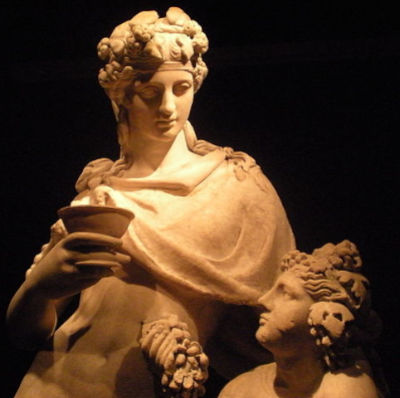

Mitologia Grega
A Mitologia Grega reúne um conjunto de lendas e mitos que foram criados pelos gregos na antiguidade.
O objetivo principal era de explicar alguns fatos, como a origem da vida, a vida após a morte, ou até mesmo os fenômenos da natureza.
Assim, a criação das narrativas fantásticas que engobam a mitologia grega foi a maneira encontrada pelos gregos para preservarem sua história.
É importante ressaltar que a civilização grega estava baseada numa religião politeísta, ou seja, eles cultuavam diversos deuses.
Deuses do Olimpo
Os Deuses do Olimpo, também chamado de Deuses Olímpicos, são os 12 deuses que formam o panteão grego.
1. Zeus
Nascido na ilha de Creta e criado na caverna no monte Ida, Zeus é filho mais novo de Cronos e Reia. Ele teve cinco irmãos: Héstia, Hades, Hera, Poseidon e Deméter. Além disso, teve diversas esposas e filhos, sendo que a união mais conhecida é com Hera, sua irmã.
Considerado o deus supremo dos céus, ele é o pai dos deuses e dos homens. Além disso, é o governante do Monte Olimpo e na mitologia romana seu correspondente é Júpiter.
2. Hera
Filha de Cronos e Reia, Hera é a irmã e esposa de Zeus. Considerada a rainha dos deuses, era também cultuada como deusa da maternidade, do casamento e das mulheres. Apesar de ter um temperamento difícil, Hera era muito fiel e não teve casos extraconjugais, como seu marido, Zeus.
Seus filhos são: Hebe, Ares, Hefesto, Ênio, Éris e Ilítia. Na mitologia Romana ela corresponde a deusa Juno.
3. Poseidon
Filho de Cronos e Reia, Poseidon é o deus dos mares, das tempestades e dos terremotos. Isso porque tem como característica um comportamento violento e instável. Como é o deus dos mares, em algumas versões ele habita as profundezas do oceano.
Teve diversos filhos, dos quais se destacam Belerofonte e Teseu. Na mitologia romana seu correspondente é Netuno.
4. Atena

Filha de Zeus e Métis, Atena, também chamada de "Palas Atena", é a deusa da sabedoria e das artes. Em algumas versões, ela nasceu da cabeça de Zeus e por isso, era muito inteligente. Protetora das cidades, Atena era uma guerreira que já nasceu armada com um escudo e um capacete.
A cidade de Atenas na Grécia era a principal e recebeu o nome por conta da deusa. Com forte senso de justiça, ela permaneceu virgem. Em outras versões do mito, teve um filho com Hefesto chamado Erictônio de Atenas. Na mitologia romana ela é chamada de Minerva.
5. Ares
Filho de Zeus e Hera, Ares era o deus da guerra e meio-irmão de Atena. Possuía um temperamento muito selvagem, típico de sua figura belicosa. Teve um relacionamento com Afrodite que era esposa de Hefesto e por isso, foi banido do Monte Olimpo durante um tempo.
Com ela, teve alguns filhos dos quais se destacam Eros e Harmonia. Na mitologia romana seu equivalente é o deus Marte.
6. Deméter
Filha de Cronos e Reia, Deméter era a deusa das estações e da agricultura. Com seu irmão Zeus, ela teve uma filha chamada Perséfone, que foi raptada por Hades, o deus do submundo.
Esse momento foi muito marcante no mito da deusa e por meio de um acordo, passou a ter sua filha ao seu lado durante três estações do ano. Ela teve ainda outros relacionamentos e com isso, outros filhos como Despina e Pluto. Na mitologia Romana ela é conhecida como Ceres.
7. Apolo
Irmão gêmeo de Ártemis, Apolo é filho de Zeus e de Leto. Nascido na ilha de Delos, ele é Deus do sol, das artes, da profecia, da ordem e da justiça, sendo um dos deuses mais cultuados do Olimpo.
Foi alimentado com Ambrosia e néctar dos deuses, o que lhe transformou em um homem adulto e destemido. Teve diversos relacionamentos, do qual merece destaque o da ninfa Dafne. Note que Apolo é o único deus da mitologia grega e romana que possui o mesmo nome em ambas.
8. Ártemis
Filha de Zeus e Leto, Ártemis era irmã gêmeo de Apolo. Deusa da caça, dos animais, da vida selvagem, da virgindade e da Lua, ela possuía um temperamento vingativo, mas por outro lado, era protetora e amorosa.
Não foi casada com ninguém e, portanto, permaneceu virgem e não teve nenhum filho. Na mitologia Romana seu correlato é a deusa Diana.
9. Hefesto
Filho de Zeus e Hera, Hefesto é o deus do fogo e dos metais. Foi um grande forjador e trabalhava próximo dos vulcões com a ajuda dos gigantes de um olho só, os ciclopes.
Considerado um dos deuses mais feios do Olimpo, Hefesto nasceu com uma deficiência que o deixou manco. Sua mãe ficou com vergonha da criança e o lançou do Monte Olimpo. Já adulto, ele retorna ao local de origem e se vinga de sua mãe. Na mitologia Romana ele é chamado de Vulcano.
10. Afrodite
Filha de Zeus e Dione, Afrodite é deusa do amor, da beleza e da sexualidade. Muito bela, ela foi obrigada a casar com Hefesto mas ele não lhe agradava e, portanto, o traiu com Ares.
Foi com ele que Afrodite teve sete filhos: Eros, Antero, Deimos, Fobo, Harmonia, Himeros e Pothos. A deusa ainda teve outros casos extraconjugais com Hermes, Apolo, Dionísio, Adônis e Anquises.
11. Hermes
Mensageiro dos deuses, Hermes era filho de Zeus e da ninfa Maia. Seu nome está associado a diversos atributos como o comércio, a riqueza, a sorte, a magia, as viagens, as estradas e os ladrões.
Criador do fogo, uma de suas funções foi de guiar os mortos para o mundo subterrâneo de Hades. Na mitologia romana seu equivalente é o deus Mercúrio.
12. Dionísio
Também chamado de Dioniso, esse era o deus do vinho e das festas. Filho de Zeus e Sêmele, sua mãe sofreu uma armadilha de Hera e nesse episódio, ela acabou morrendo e seu corpo foi desfeito em diversos pedaços.
Zeus resolveu pegar o coração da criança e o costurou na coxa, até ele nascer. Casou-se com Ariadne e ainda teve outros casos com deuses e mortais. Um dos casos mais conhecidos é sua relação com Afrodite, com quem teve o filho Priapo. Na mitologia romana ele é conhecido por Baco.
Deuses primordiais.
Αion: o deus da eternidade.
Áclis: a deusa da noite eterna. A primeira criatura que alguns dizem que existia antes mesmo do próprio Caos.
Ananque: a deusa da inevitabilidade, compulsão e necessidade.
Caos: o deus do vazio. Ele foi o começo de toda a vida.
Cronos:: o deus do tempo.
Éter: do deus da luz. A centelha de vida para cada criatura.
Érubus: o deus das trevas e das sombras
Eros: o deus do amor e da procriação.
Gaia: deusa da terra (Mãe Terra). Ela é a mãe de tudo, portanto, é a mãe primitiva.
Hemera: a deusa do dia.
Hipnos: o deus do sono e pai de Morpheus.
Nemesis: a deusa da retribuição.
Nesoi: as deusas das ilhas.
Nix: a deusa da noite. Ela era uma entidade soberana, primordial e cosmogênica, respeitada e temida pela maioria dos deuses.
Hipnos: o deus do sono e pai de Morpheus.
Óreas: o deus das montanhas.
Ponto: o deus do mar e pai das criaturas marinhas.
Tártaro: o deus da parte mais escura e profunda do submundo – o deus original
Tálassa: a deusa do mar e consorte do deus Ponto.
Tanátos: o deus da morte. Ele é o irmão gêmeo de Hipnos.
Urano: o deus dos céus. Ele logo se tornou o governante do mundo e pai dos Titãs.